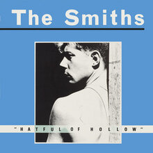
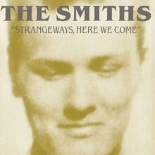
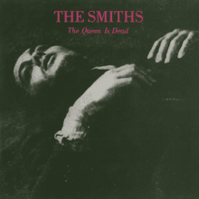

<!--2372036_Muhammad Sava Akbar Bastaman_B-->
<!DOCTYPE html>
<html lang="en">
<head>
    <meta charset="UTF-8">
    <meta name="viewport" content="width=device-width, initial-scale=1.0">
    <title>The Smiths</title>
    <link rel="stylesheet" href="styl.css">
    <link rel="stylesheet" href="style3.css">
    <link rel="preconnect" href="https://fonts.googleapis.com">
    <link rel='stylesheet' id='theme-font-awesome-css' href='//use.fontawesome.com/releases/v5.14.0/css/all.css' type='text/css' media='all' />
    <link rel="stylesheet" href="https://cdnjs.cloudflare.com/ajax/libs/font-awesome/4.7.0/css/font-awesome.min.css">
    <link rel="preconnect" href="https://fonts.gstatic.com" crossorigin>
    <link href="https://fonts.googleapis.com/css2?family=Abril+Fatface&family=Amiri:ital@1&family=Girassol&family=Titan+One&display=swap" rel="stylesheet">
    <link href="https://cdn.jsdelivr.net/npm/bootstrap@5.3.2/dist/css/bootstrap.min.css" rel="stylesheet" integrity="sha384-T3c6CoIi6uLrA9TneNEoa7RxnatzjcDSCmG1MXxSR1GAsXEV/Dwwykc2MPK8M2HN" crossorigin="anonymous">
</head>
<aside>
    <header style="background-color: aqua;">
    </header>
    <nav>
        <nav class="navbar navbar-expand-lg bg-secondary">
        <div class="container-fluid">
            
          <a class="navbar-brand" style="color:black" style="font-family: 'Amiri', serif;"> &nbsp;Bastaman</a>
          <button class="navbar-toggler" type="button" data-bs-toggle="collapse" data-bs-target="#navbarSupportedContent" aria-controls="navbarSupportedContent" aria-expanded="false" aria-label="Toggle navigation">
            <span class="navbar-toggler-icon"></span>
          </button>
          <div class="collapse navbar-collapse" id="navbarSupportedContent">
            <ul class="navbar-nav me-auto mb-2 mb-lg-0">
              <li class="nav-item">
                <a class="nav-link active" style="color:red" class="warnafontnav" aria-current="page" href="index.html">Home</a>
              </li>
              <li class="nav-item">
                <a class="nav-link" style="color:white" class="warnafontnav" href="#spotify">Albums and Spotify</a>
            </ul>
          </div>
        </div>
        </nav>
    </nav>
      <!--Navbar-->
      <main>
        <aside>
            <h1>The Smiths</h1><br><br>
            <p>
                The Smiths were a rock band which formed in 1982 in Manchester, England, United Kingdom. The band consisted of Morrissey (vocals, lyrics), Johnny Marr (guitar, music), Mike Joyce (drums) and Andy Rourke (bass). Hugely influential, The Smiths lasted all of five years from 1982 to 1987, releasing during this period four studio albums (The Smiths, Meat Is Murder, The Queen Is Dead and Strangeways, Here We Come) and three compilation albums (Hatful Of Hollow, The World Won’t Listen and Louder Than Bombs). Meat Is Murder went on to enter the British charts at number one in February of 1985, and The Queen Is Dead further confirmed the band’s popularity with its release in spring 1986. Greeted with enthusiastic reviews and peaking at number two on the U.K. charts, the album also developed The Smiths’ cult following in the U.S., breaking into the Top 100.<br><br>

                After the band’s split in 1987, a further six albums have been released, bringing the total number of Smiths albums to 13. These albums consisted of another five compilation albums (Best… I, …Best II, Singles, The Very Best of the Smiths and The Sound of the Smiths), and one live album (Rank) recorded before the band’s split during The Queen Is Dead tour. Both “Best I” and “Best II” were heavily criticised by critics and some fans; “The Very Best of”, was very similar content to said “Best” albums, sold excellently, but drew much criticism from press and the band, who had no input.<br><br>
                
                Former members<br><br>
                
                Bass was originally played by Dale Hibbert, but he was replaced after 4 months. Craig Gannon was briefly a second guitarist for the band in 1986.</p>
              <br><br><iframe id="spotify" style="border-radius:12px" src="https://open.spotify.com/embed/artist/3yY2gUcIsjMr8hjo51PoJ8?utm_source=generator" width="100%" height="352" frameBorder="0" allowfullscreen="" allow="autoplay; clipboard-write; encrypted-media; fullscreen; picture-in-picture" loading="lazy"></iframe>
            </aside>
        <article>
            
            <div style="padding-left: 70px;" class="sociallinks">
              <a href="https://www.facebook.com/TheSmiths/" target="_BLANK"><i class="fab fa-facebook"></i></a>
              <a href="https://www.instagram.com/thesmithsofficial?igsh=MTc2azNieWprZDRpYQ" target="_BLANK"><i class="fab fa-instagram"></i></a>
              <a href="https://open.spotify.com/artist/3yY2gUcIsjMr8hjo51PoJ8?si=ykuCxQrbTM6xHC2yO-dLbw" target="_BLANK"><i class="fab fa-spotify"></i></a><br><br>
              </div>
              <h2>Popular Albums</h2>
              <div class="row">
                <div class="column">
              
              <figcaption>Hatful of Hollow<br>1984</figcaption>
            </div>
            <div class="column">
              
              <figcaption>Meat Is Murder<br>1985</figcaption>
            </div>
            <div class="column">
              
              <figcaption>Strangeways, Here We Come<br>1987</figcaption>
            </div>
            <div class="column">
              
              <figcaption>The Queen Is Dead<br>1986</figcaption>
              </div>
              </div>
            </article>
    </main>
    <footer id="bgfooter">
      <p>&copy; 2024 My Music Website. All rights reserved.</p>
      <style>
      footer {
          background-image: url(https://cdn.pixabay.com/photo/2012/04/10/16/14/union-jack-26119_1280.png);
          background-repeat: no-repeat;
          margin: 30px;
          justify-content: center;
          position: sticky;   
          background-size: 100%;
          text-align: center;
          }
      </style>
  </footer>
</body>
</html>